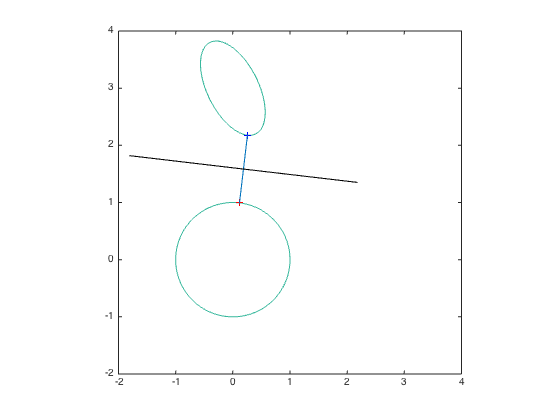

% Joelle Skaf - 11/06/05 % (a figure is generated) % % Finds a separating hyperplane between 2 ellipsoids {x| ||Ax+b||^2<=1} and % {y | ||Cy + d||^2 <=1} by solving the following problem and using its % dual variables: % minimize ||w|| % s.t. ||Ax + b||^2 <= 1 : lambda % ||Cy + d||^2 <= 1 : mu % x - y == w : z % the vector z will define a separating hyperplane because z'*(x-y)>0 % input data n = 2; A = eye(n); b = zeros(n,1); C = [2 1; -.5 1]; d = [-3; -3]; % solving for the minimum distance between the 2 ellipsoids and finding % the dual variables cvx_begin variables x(n) y(n) w(n) dual variables lam muu z minimize ( norm(w,2) ) subject to lam: square_pos( norm (A*x + b) ) <= 1; muu: square_pos( norm (C*y + d) ) <= 1; z: x - y == w; cvx_end t = (x + y)/2; p=z; p(1) = z(2); p(2) = -z(1); c = linspace(-2,2,100); q = repmat(t,1,length(c)) +p*c; % figure nopts = 1000; angles = linspace(0,2*pi,nopts); [u,v] = meshgrid([-2:0.01:4]); z1 = (A(1,1)*u + A(1,2)*v + b(1)).^2 + (A(2,1)*u + A(2,2)*v + b(2)).^2; z2 = (C(1,1)*u + C(1,2)*v + d(1)).^2 + (C(2,1)*u + C(2,2)*v + d(2)).^2; contour(u,v,z1,[1 1]); hold on; contour(u,v,z2,[1 1]); axis square plot(x(1),x(2),'r+'); plot(y(1),y(2),'b+'); line([x(1) y(1)],[x(2) y(2)]); plot(q(1,:),q(2,:),'k');
Calling SDPT3 4.0: 21 variables, 8 equality constraints ------------------------------------------------------------ num. of constraints = 8 dim. of sdp var = 4, num. of sdp blk = 2 dim. of socp var = 9, num. of socp blk = 3 dim. of linear var = 6 ******************************************************************* SDPT3: Infeasible path-following algorithms ******************************************************************* version predcorr gam expon scale_data HKM 1 0.000 1 0 it pstep dstep pinfeas dinfeas gap prim-obj dual-obj cputime ------------------------------------------------------------------- 0|0.000|0.000|7.9e+00|1.6e+01|1.0e+03| 3.464102e+00 0.000000e+00| 0:0:00| chol 1 1 1|0.818|0.637|1.4e+00|5.9e+00|2.6e+02| 7.307908e+00 -2.447324e+01| 0:0:00| chol 1 1 2|1.000|1.000|6.0e-07|1.0e-02|3.0e+01| 4.490674e+00 -2.585969e+01| 0:0:00| chol 1 1 3|0.978|0.869|2.2e-07|2.2e-03|4.0e+00| 2.871215e+00 -1.102772e+00| 0:0:00| chol 1 1 4|0.803|1.000|4.3e-08|1.0e-04|1.6e+00| 1.750396e+00 1.085273e-01| 0:0:00| chol 1 1 5|0.995|0.932|1.8e-09|1.6e-05|1.5e-01| 1.285558e+00 1.135127e+00| 0:0:00| chol 1 1 6|0.979|0.983|1.5e-10|1.3e-06|3.0e-03| 1.194346e+00 1.191317e+00| 0:0:00| chol 1 1 7|0.974|0.981|4.2e-11|1.2e-07|7.2e-05| 1.192489e+00 1.192417e+00| 0:0:00| chol 1 1 8|0.948|0.973|7.6e-11|3.3e-09|3.5e-06| 1.192444e+00 1.192440e+00| 0:0:00| chol 1 1 9|1.000|1.000|2.7e-11|1.3e-11|4.2e-07| 1.192442e+00 1.192441e+00| 0:0:00| chol 1 1 10|0.999|0.994|1.7e-11|5.5e-12|1.0e-08| 1.192441e+00 1.192441e+00| 0:0:00| stop: max(relative gap, infeasibilities) < 1.49e-08 ------------------------------------------------------------------- number of iterations = 10 primal objective value = 1.19244136e+00 dual objective value = 1.19244135e+00 gap := trace(XZ) = 1.03e-08 relative gap = 3.05e-09 actual relative gap = 3.04e-09 rel. primal infeas (scaled problem) = 1.73e-11 rel. dual " " " = 5.46e-12 rel. primal infeas (unscaled problem) = 0.00e+00 rel. dual " " " = 0.00e+00 norm(X), norm(y), norm(Z) = 3.9e+00, 1.7e+00, 3.2e+00 norm(A), norm(b), norm(C) = 6.2e+00, 5.7e+00, 2.0e+00 Total CPU time (secs) = 0.19 CPU time per iteration = 0.02 termination code = 0 DIMACS: 2.5e-11 0.0e+00 5.5e-12 0.0e+00 3.0e-09 3.1e-09 ------------------------------------------------------------------- ------------------------------------------------------------ Status: Solved Optimal value (cvx_optval): +1.19244
